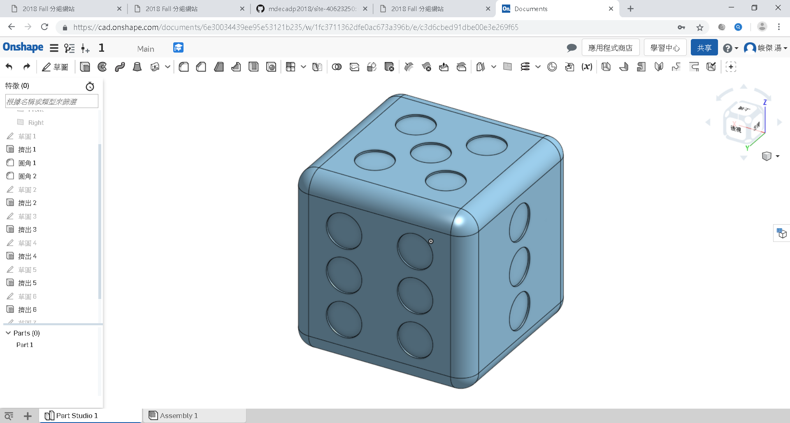

Step1:建立 Onshape 帳號 - 請利用學校 gmail 建立教育版帳號
Step2:3D 環境導航 (navigate)
Step3:說明基於草圖 (sketch-based)的建模
Step4:介紹 4 個基本特徵 (features)（擠出(extrude)，旋轉(revolve)，掃描(sweep)，和斷面混成(loaf)）
Step5:從 2D 過渡到 3D
Step6:介紹基本草圖
Step7:附錄A：鍵盤快捷鍵 (keyboard shotcuts)，滑鼠和觸控平面手勢 (touchpad gestures)，檢視工具
Step8:附錄B：導航說明檔，建立帳號，訂閱計劃 (subscription plans)
Step9:圓柱薄殼 (cylinder shell) - 繪圖界面與可視化/檢視的介紹
Step10:針對既有草圖的模型 - 接續建立特徵
Step11:現存公用模型 (public models) - 如何搜尋並復製到工作區 (workspace)
影片:
期中做業說明:業倉儲中 CMSimfly, Reveal, Pelican Blog 管理方法
Onshape練習:

心得:week4再學習Onshape，我發現它的界面其實有點像inventor，所以我可以很快的熟悉這套軟體，這不多久應該能完全掌握。